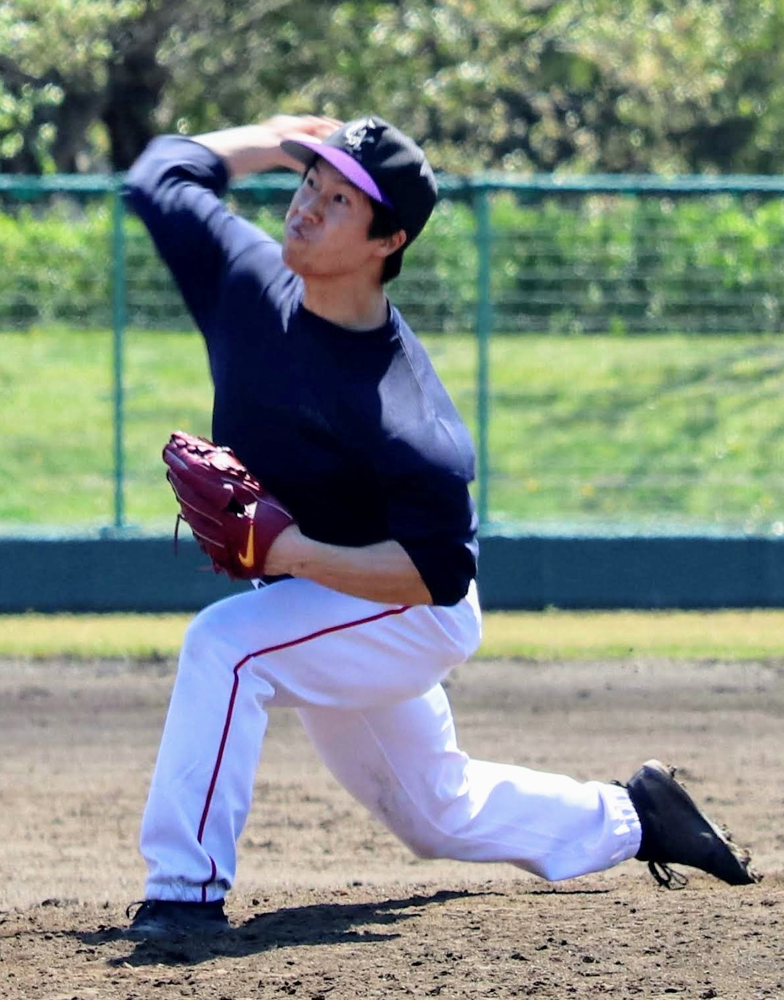
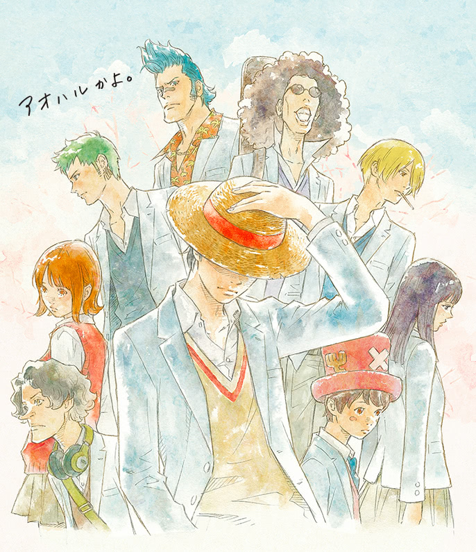

🔝
TOP
自己紹介
スキル
ポートフォリオ
お問い合わせ
Arata's Portfolio
自己紹介
名前:中村 新
年齢:27
出身:滋賀県(現在は埼玉県に在住)
学歴:高知大学理学部応用理学科
来歴:新卒から3年間消防士を勤め、今年から心機一転エンジニアを志す
その他:趣味は野球と筋トレで、野球も筋トレも10年以上つづけている

スキル
エンジニア案件
HTML,CSS,Javascript,jQuery等を使ったフロントエンド案件に対応します。 常駐、リモートワーク及び週1～週5まで対応します。
Web制作
LP１枚から企業向けサイトまで対応。全てレスポンシブ対応で仕上げます。納品後のメンテナンス性も考慮したサイト作りを心がけております。
使用ツール
Git/GitHub/GitLab/SourceTree
ポートフォリオ
LP及びWebサイト
HTML/CSS/Javascript/jQuery

お問い合わせ
ご依頼・ご相談等無料でお引き受けします。 メール、各種SNSのDMお待ちしております。 気楽にご連絡してください。
Nakamura Arata
mail:bball6bball15@gmail.com
Copyright © Arata portfolio 2020